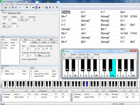
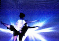
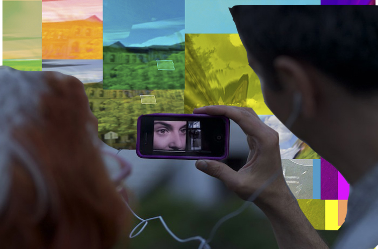

people doing strange things with electricity
+++++++
what: dorkbot-nyc meeting
where: 315 Prentis Hall, 632 W 125th St, Manhattan (1 train to 125th St)
when: Wednesday, 01 Oct, 7-9pm
$$$: $$$FREE$$$ (BRING FOOD & DRINK!)
+++++++
The next dorkbot-nyc meeting will take place at 7pm on Wednesday, November 6th, 2013 at Prentis Hall in Harlem. We'll be in the big room in the center of the 3rd floor.
The meeting is free and open to the public. PLEASE BRING SNACKS AND DRINKS TO SHARE!!! WE ARE HUNGRY!!!
+++++++
Featuring the 445 m/s @ 20°C emissions of:
 Chris Korda: ChordEase
ChordEase is a new instrument that makes it easier to play music with complicated chords. No matter what the chords are, you can play as if they were all in the key of C. You don't need to play sharps or flats, because ChordEase automatically adds them for you. Though ChordEase is intended for jazz, it could be useful for any type of music that modulates frequently. ChordEase alters your notes in real time in order to make them harmonically correct, while preserving their rhythm and dynamics. By delegating rapid music theory calculations to ChordEase, you gain freedom to concentrate on other aspects of musical performance. ChordEase isn't a physical instrument, it's a free (open source) software that uses artificial intelligence to enhance ordinary MIDI instruments, so that they can be approached in a radically new way. It's especially useful to people who approach music rhythmically, because it can translate rhythmic input into harmonic and melodic output.
http://chordease.sourceforge.net Gene Kogan: KinectProjectorToolkit
Gene Kogan will demo KinectProjectorToolkit, a software toolkit for calibrating a depth camera to a projector, enabling spatially-aware video and reprojection of objects back onto themselves. Works making use of the toolkit will be shown, including recent music, theater, and dance pieces.
http://genekogan.com LoVid: iParade and Hyperplace
LoVid will present a nesting doll of projects; iParade and Hyperplace. iParade is LoVid's series of experimental and locative media that is site specific and distributed through LoVid's custom made App. The project started in NYC and is currently growing chapters across the country. Hyperplace is a festival organized as part of LoVid's interests and investigation into relationships between place and technology. The first Hyperplace will take place in Harlem October 4-6 and will include over 30 interdisciplinary and intergenerational artists.
http://lovid.org